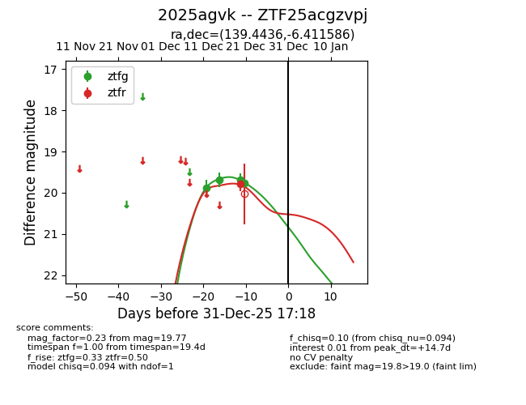
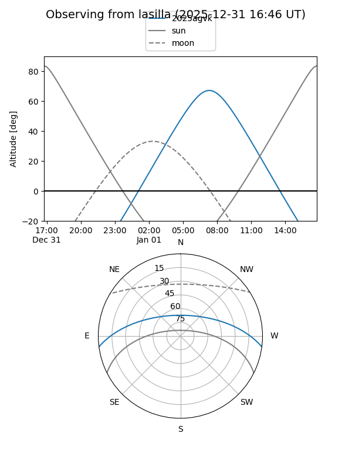
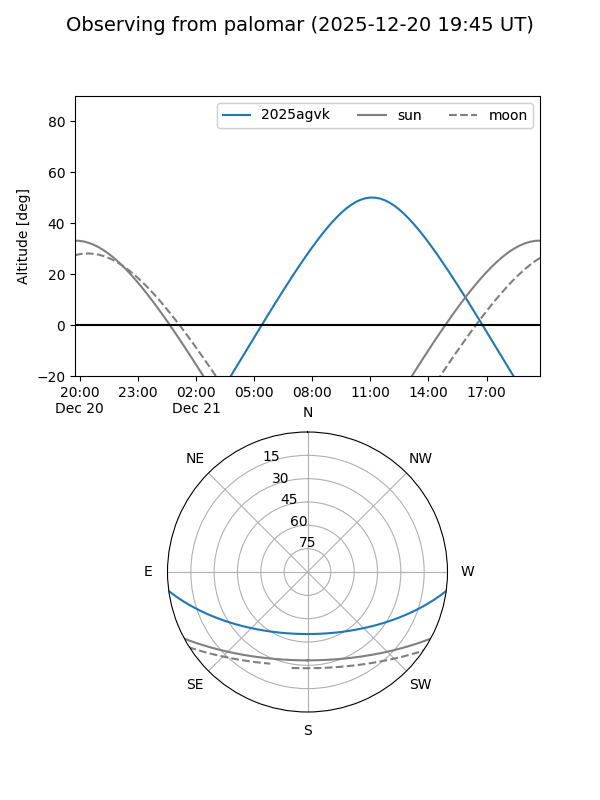
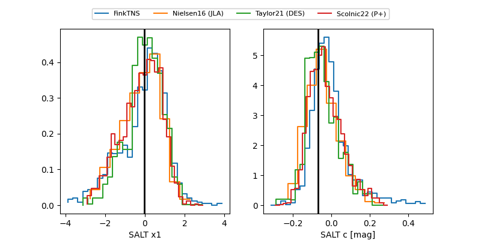

2025agvk
Target 2025agvk at 2025-12-23 10:57
Aliases and brokers:
FINK: fink-portal.org/ZTF25acgzvpj
Lasair: lasair-ztf.lsst.ac.uk/objects/ZTF25acgzvpj
ALeRCE: alerce.online/object/ZTF25acgzvpj
TNS: wis-tns.org/object/2025agvk
YSE: ziggy.ucolick.org/yse/transient_detail/2025agvk
alt names
ZTF25acgzvpj (ztf,fink_ztf)
2025agvk (tns,yse)
Coordinates:
equatorial (ra, dec) = 139.4436,-6.41159
equatorial (HMS+DMS) = 09:17:46.47,-06:24:41.71
galactic (l, b) = (237.7759,+28.43737)
Flags:
Photometry:
last ztfg=19.77, ztfr=19.79
4 ztfg, 1 ztfr detections
Lightcurve

Visibility


Additional plots
